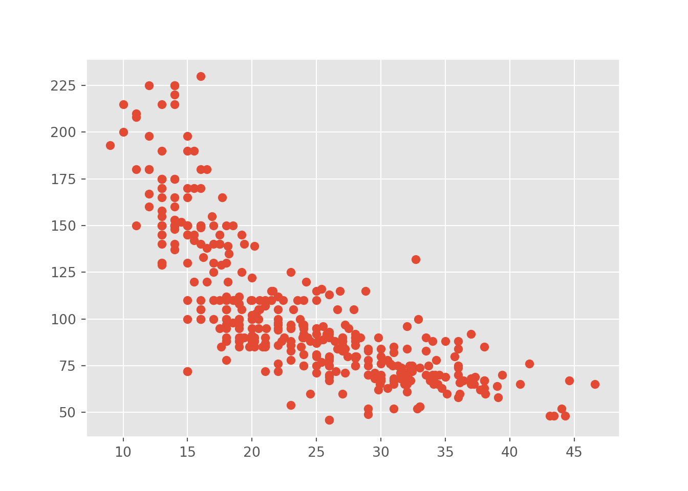

I tried to learn Python several times. Once I had a very peculiar class in which we should learn Python for processing natural language. Well, it was more about text mining than applying Python. I tried to learn Python with the help of several books which introduced all the ins and outs of Python. Before I started to learn Python the first time, I fluently spoke several other statistics software languages like R or Stata. I had basic skills in other languages like HTML, CSS, JavaScript. I wrote my PhD with LaTeX. Coding and programming languages were not new for me, but still I failed to learn Python.
It is really a shame, since I consider myself a tech-savvy without having the heavy programming background, but with a lot of fun learning new things and enjoy coding. Well, at least, if we get some results. For this reason I started this website. I was sick of reading books about Python without having the impression that I learn what I should learn to improve my skills. This impression could also be due to my educational background. I know what a function is, what a loop does, and have some background in statistics, even though the latter is limited since I am home in the social sciences.
Anyway, this website is the result of reading many books that could not explain what I was seeking. If you want to learn Python to automate processes, learn some statistical procedures from the scratch, or use Python to program some games, this website will not help you in any way. However, you do wanna transfer your knowledge from other languages like R, if you are familiar with multivariate (non-) linear regression techniques or do you have background in empirical social science, than this website might help you transfer your knowledge to Python. Let be give you an example why I started this website.
2.1 How (not) to calculate some basic statistics in Python
The last Python book I read, introduced probably over a hundred pages about the different data structure, and of course, we need to know that to handle Python. I certainly don’t argue about this point, but instead of providing me meaningful examples to illustrate this point, I am reading about about artificial examples that not even work when I copied the code and run it in my own console. Well, shit happens, don’t you think? I really started to get the creep as I reached a statistics section. Let’s see what I learned from this chapter.
In Python, you have to import the according libraries and install first, in case you work with a library the very first time. We will cover these points later, for the moment it is enough to look at the Python code and output. So, I import the seaborn package in order to have some data at hand. The seaborn.get_dataset_names() function returns all available data sets.
#import seaborn to get some dataimport seaborn as snssns.get_dataset_names()
We can save the mpg data under the name cars and use the print function to examine the data.
#use the mpg data set as carscars = sns.load_dataset("mpg") print(cars)
#> mpg cylinders ... origin name
#> 0 18.0 8 ... usa chevrolet chevelle malibu
#> 1 15.0 8 ... usa buick skylark 320
#> 2 18.0 8 ... usa plymouth satellite
#> 3 16.0 8 ... usa amc rebel sst
#> 4 17.0 8 ... usa ford torino
#> .. ... ... ... ... ...
#> 393 27.0 4 ... usa ford mustang gl
#> 394 44.0 4 ... europe vw pickup
#> 395 32.0 4 ... usa dodge rampage
#> 396 28.0 4 ... usa ford ranger
#> 397 31.0 4 ... usa chevy s-10
#>
#> [398 rows x 9 columns]
So, what did I learn in the chapter? Well, how can we calculate an mean with Python? Shouldn’t be that though. I know how to calculate a mean by hand since my early days of school and how it is done in a statistic software. The authors offered me the following solution:
def mean (array): n =len(array)returnsum(array) / nmean(cars.mpg)
#> 23.514572864321615
In the code snippet we define the function mean to create a mean, within this function we define n as the length(len) of the array and the functions returns a value, which divides the sum of the array by the length n. Fine. That’s exactly a cool way to show us how a functions works. We have to provide a name of a function, tell Python what the function should do, in this case with an array of numbers.
In my experience, I always learned how functions and other concepts work in much more artificial way. Look how I learned how a function works in Python:
#Create your own functiondef hello(name):return (f"Hallo, {name}! How are you?")# Call the function and give value for the input namehello("Edgar")
#> 'Hallo, Edgar! How are you?'
Thus, we create the hello function that returns a sentence and inserts the name of the input value. Nothing wrong about that, even though calculating a mean seems a little bit more realistic to illustrate why we need such a function.
Anyway, in the next steps the author gives us a function for the mean, a function for the median, a function for the modus, a function to calculate the variance and, I am dead serious, other functions for others measure of central tendency. Come on, this guy can’t be serious, we should learn how this works in practice. Use NumPy to get the scientific toolkit and pandas for tabular processing and the presentation of data. The latter comes with a lot of functions we can use them in order to calculate basic statistics and more advanced stuff. Use the describe function to get an overview about the data. Let’s see how it works.
import numpy as npimport pandas as pdcars.describe()
So, we have to append the describe() function to the saved cars data in order to get an overview of the central tendency measures. You can do the same with all other functions that calculate other measures, such as the mean or standard deviance:
cars.mean()
#> mpg 23.514573
#> cylinders 5.454774
#> displacement 193.425879
#> horsepower 104.469388
#> weight 2970.424623
#> acceleration 15.568090
#> model_year 76.010050
#> dtype: float64
#>
#> <string>:1: FutureWarning: The default value of numeric_only in DataFrame.mean is deprecated. In a future version, it will default to False. In addition, specifying 'numeric_only=None' is deprecated. Select only valid columns or specify the value of numeric_only to silence this warning.
cars.std()
#> mpg 7.815984
#> cylinders 1.701004
#> displacement 104.269838
#> horsepower 38.491160
#> weight 846.841774
#> acceleration 2.757689
#> model_year 3.697627
#> dtype: float64
#>
#> <string>:1: FutureWarning: The default value of numeric_only in DataFrame.std is deprecated. In a future version, it will default to False. In addition, specifying 'numeric_only=None' is deprecated. Select only valid columns or specify the value of numeric_only to silence this warning.
So, what you do think? Shall we learn how to define our own function to calculate the mean or choose the easy way and let a package calculate the “hard” stuff for us. I would say both. We learned on this entry how to write an own function by solving a real-world problem. In case we didn’t know how to calculate a mean in Python we could use a function and I provided you on purpose with a second example to show you how many others explain a function. However, after learning what a function is, we need to know how we could work and spent our time more efficiently.
This point becomes bothersome if we spent too much of our time with things that have a simple solution. For instance, guess what the next code does. And I guess you will skip the code after line 2, well that’s at least what recommend if you know what a correlation is.
It’s the “devil’s code”! Of course, I am just kidding, but please don’t get me wrong. I think it is very useful to see how a correlation coefficients is calculated. You should do it at least once per hand if you learn the concept for the first time. But in my case I don’t have to learn what a correlation is. Let’s learn how Python works, but in an efficient way:
And we should at least look at the scatter plot in case we talk about correlations. The matplotlib provides a lot of different graphs for us.
import matplotlibimport matplotlib.pyplot as pltmatplotlib.style.use('ggplot')plt.scatter(cars.mpg, cars.horsepower)

And in case you are an R user, you can even use the ggplot2 style, just to let you show some possibilities. But of course, we have to think more systematically how we can reach our goal in the next chapter.